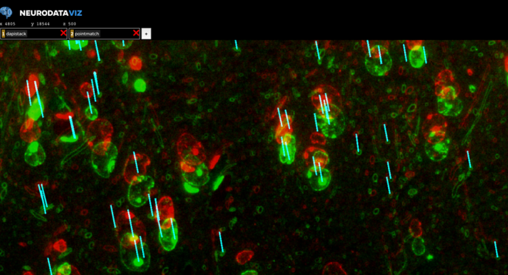
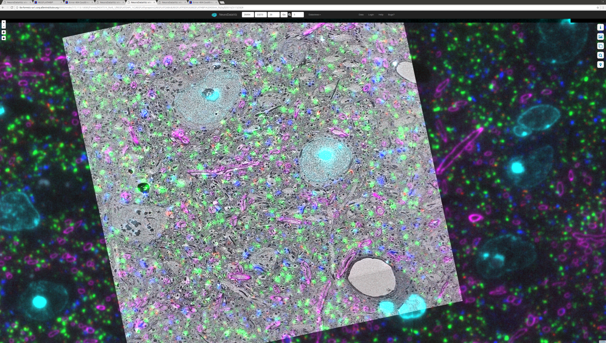
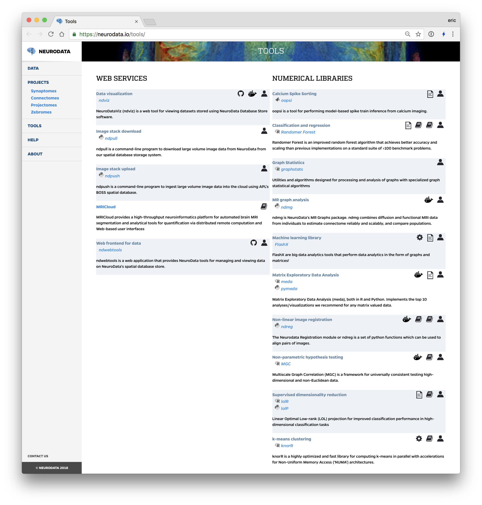

name:opening <img src="images/neurodata_blue.png" style="height:150px;float:right;"/> ### NeuroData: Embracing Open Source for Big Data Neuroscience Eric Perlman<br> <br><br><br><br><br><br><br> <img src="images/funding/jhu_bme_blue.png" STYLE="HEIGHT:95px;"/> <img src="images/funding/KNDI.png" STYLE="HEIGHT:95px;"/> .foot[perlman@jhu.edu | <http://neurodata.io/talks/> ] --- class: center ### <center>What is NeuroData?</center> <img src="images/neurodata_venn.png" STYLE="width:50%;"/> --- ### Origin: Hosting public data (2011-) <img src="images/website_datapage.png" style="width: 100%;"/> .foot[<http://neurodata.io/data/>] --- ### ... but, it's hard. - Don’t work alone! - In 2011, Open Connectome Project set out to revolutionize data management for EM neuroscience with storage and analytics services on our cluster - And we have had mixed results... - ...but excited to have seeded a second generation --- ### The New Role of neurodata.io... Shift from "build your own" to "see what's available; supplement where necessary." - To facilitate a collaborative, open-source, cloud computing ecosystem for end-to-end neuroscience - Collaborative: multiple organizations and communities developing and using the same tools - End-to-end: data management from microscope to publication - Visualize data at all stages - Reproducible, extensible analysis --- ### What is our software stack? <img src="images/nd_pipeline.png" STYLE="width:100%;"/> .foot[https://neurodata.io/help/] --- ### A brief history of neurodata spatial stores... - (2011-2013) Open-Connectome Project (OCP) - First version of a spatial data store for volumetric cutouts and annotation - (2013-2016) NeurodataStore (ndstore) - Clustered, scale-out reimplementation of OCP on hosted NoSQL clusters - Migration to the cloud in 2016 - (2014-present) IARPA MICrONS program drives Boss development - JHU/APL builds and deploys for MICrONS performers - (2016-present) neurodata.io adopts BossDB for open-science - Parallel deployment of cloud services, independently managed - Contribute features back through pull requests --- ### BossDB Features & Benefits - ported to AWS for scalability - random access to arbitrary cutouts - downsamples - experimental metadata storage (e.g. JSON) - authentication - spatial queries on annotations <img src="images/bossDB.png" STYLE="width:100%;"/> .foot[https://github.com/jhuapl-boss/boss] --- ### NDPush & NDPull data to/from cloud - images: uint8 and uint16 - annotations: uint64 - file formats: png, tiff, jpg, numpy, etc. - z-slice: flexible naming conventions - multi-channel - pip installable .foot[https://github.com/neurodata/ndpush and https://github.com/neurodata/ndpull] --- ### Is a central (active) data store the right choice? ...not always. --- ### Other storage options - hdf5 - n5 & Zarr provide chunked N-dimensional data stores - same api for local or remote and parallel writes - neuroglander's precomputed chunk & compressed segmentation format - We are also exploring "Boss direct io", bypassing the service layer .foot[https://github.com/saalfeldlab/n5/]<br/> .foot[https://github.com/zarr-developers/zarr/] --- ### NeuroGlancer for Visualization .pull-left[ Visualization with NeuroGlancer at all stages! - Acquistion - Alignment - Analysis ] .pull-right[ <img src="images/ndviz2.jpg" style="width: 120%;"/> ] .foot[https://github.com/google/neuroglancer] --- ### Modifications to NeuroGlancer - Boss support - Including authentication - Color selection - Color picker & min/max values to generate shaders - Used heavily on LM datasets - Other ways to interact with state (export, load remote) - Static sharing of views w/o python backend. - Extra visualizations (e.g. render pair matches) - Ontology info (e.g., display the region name from the ARA) --- ### Render Tools & services - Web-based version of TrakEM2's XML datastore - Stores references to raw data & transformations - RESTful interfaces to load & update data - Dynamic rendering of data - Extended to support cloud data sources (e.g., raw images stored in an AWS) <img src="images/render_stack_list.png" style="width:50%"/> .foot[https://github.com/saalfeldlab/render/] --- ### Alignment verification...  --- ### Correlated EM-Light  --- ### Light sheet registration (ndreg) <br> <img src="images/ndreg.png" style="width: 100%;"/> - LDDMM - Fully automatic (no landmarks) - Works on iDisco, Clarity, and multiple species... --- ### Other tools ... - Image analysis - Statistical machine learning (LOL, RerF, FlashX, knor, ...)  .foot[https://neurodata.io/tools/] --- ### Acknowledgements - neurodata: Randal Burns, Joshua Vogelstein & Ben Falk - viz: Alex Baden & Jeremy Maitin-Shepard (Google) - ndreg: Vikram Chandrashekhar & Daniel Tward - synaptomes: Jesse Patsolic, Forrest Collman (AIBS), Sharmi Seshamani (AIBS), Stephen Smith (AIBS) - render: Stephan Saalfeld (Janelia) & Eric Trautman (Janelia) <img src="images/funding/nsf_fpo.png" STYLE="HEIGHT:95px;"/> <img src="images/funding/nih_fpo.png" STYLE="HEIGHT:95px;"/> <img src="images/funding/darpa_fpo.png" STYLE=" HEIGHT:95px;"/> <img src="images/funding/iarpa_fpo.jpg" STYLE="HEIGHT:95px;"/> <img src="images/funding/KAVLI.jpg" STYLE="HEIGHT:95px;"/> --- class:center <img src="images/neurodata_blue.png" style="width:50%;"/>